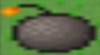
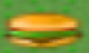
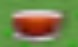
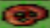
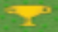

Utilisez les flèches directionnelles pour déplacer votre personnage.
Utilisez la barre espace pour poser une bombe.
Vos bombes peuvent servir à tuer les monstres, à détruire certains murs mais elles peuvent aussi vous enlever une vie. 
Ramassez la nourriture qui se trouve sur la map afin de réussir le niveau.  si vous avez choisi Donald Trump.  si vous avez choisi Vladimir Putin.  si vous avez choisi Angela Merkel. si vous avez choisi Xi Jinping.
Une fois toute la nourriture ramassée, vous devez atteindre le portail afin de passer au niveau suivant.
Lors du dernier niveau, vous devrez vous emparez du trophée une fois toute la nourriture ramassée 